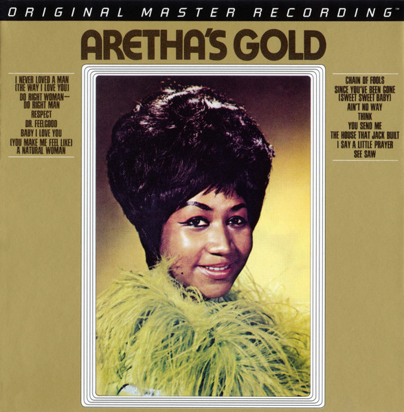

SACD
Aretha's Gold
Aretha Franklin
Media: — · Sleeve: —
—
Personal
Discogs SuggestedCA$99.28
Discogs MedianCA$99.28
Discogs HighCA$99.28
- Physical Copy ID
- BB-SACD-074
- Year
- 2014
- Label
- Mobile Fidelity Sound Lab
- Catalog #
- UDSACD 2142
- Country
- USUS
- Genre / Style
- Funk / Soul · Soul